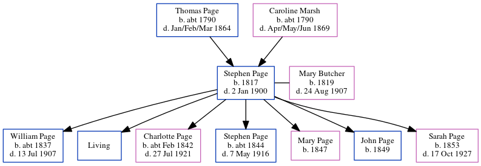

Stephen Page 1817 - 1900
[ Home ] | [ Calendar ] | [ Surnames Index ] | [ Census Index ] | [ Family History ]An agricultural laborer and the child of Thomas Page (a laborer) and Caroline Marsh, Stephen Page, the three times great-uncle of Nigel Horne, was born in Newington, Kent, England in 18171,2,3, was baptized in Newington, Hythe, Kent, England on Jan 26, 1817 and married Mary Butcher (with whom he had 7 children: William Richard, James, Charlotte Ann, Stephen, Mary, John and Sarah Elizabeth, along with 1 surviving child) at Ss Mary & Eanswith, Folkestone, Kent, England on Aug 13, 18375.
During his life, he was living in Folkestone on Jun 6, 18416; on Gibraltar Lane in Folkestone on Mar 30, 18511; at Bank House, Cheriton Road, Cheriton, Kent on Apr 3, 18812; and at Bank Cottage, Cheriton, Kent in 1900.
He died on Jan 2, 1900 in Elham, Kent, England3,4 and was buried at Folkestone Cemetery, Cheriton Road in Folkestone on Jan 8, 19004.
Parents
- Thomas was born c. 1790
- Caroline was born c. 1790
Children
- William Richard was born c. 1837
- Charlotte Ann was born c. Feb 1842
- Stephen was born c. 1844
- Mary was born in 1847
- John was born in 1849
- Sarah Elizabeth was born in 1853
Citations
- 1851 England, Wales & Scotland Census - Findmypast (was age 34 and the head of the household)
- 1881 England, Wales & Scotland Census - Findmypast (was age 64 and the head of the household)
- England & Wales deaths 1837-2007 - Findmypast
- Kent, Folkestone Cheriton Road Cemetery Memorial Inscriptions - Findmypast
- England & Wales Marriages 1837-2005 - Findmypast
- 1841 England, Wales & Scotland Census - Findmypast (was age 20)
Media
Stephen Page - Gravestone

Stephen Page - Probate

Folkestone Herald January 20, 1900

Kent, Canterbury Archdeaconry marriages 1538-1928 - GBPRS/CANT/M/97001024/1
England & Wales marriages 1837-2008 - BMD/M/1837/3/AZ/000410/045
England Marriages 1538-1973 - R_22085097608
Canterbury Baptisms Transcription - GBPRS-CANT-B-96501009
England & Wales deaths 1837-2007 - BMD/D/1900/1/AZ/000355/203
Kent, Folkestone Cheriton Road Cemetery memorial inscriptions - GBPRS/KENT/MIS00006780
1851 England, Wales & Scotland Census - GBC/1851/0005960904
England Births & Baptisms 1538-1975 - R_884581975
1841 England, Wales & Scotland Census - GBC-1841-0014078386
1881 England, Wales & Scotland Census - GBC/1881/0004958190
Family Tree
Generated by ged2site. Last updated on Jun 11, 2024